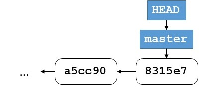

title: 软件构造基础
软件构造基础
本章主要记录软件构造过程中的过程、质量指标和版本控制。
软件构造的多维度视图
| 维度 | 属性 | 属性 |
|---|---|---|
| 阶段 | 编译期(Built-Time) | 运行期(Run-Time) |
| 层次 | 代码层次(Code-Level) | 组件层次(Component-Level) |
| 跨度 | 时刻(Moment) | 时期(Period) |
源代码的逻辑组织结构，函数(Function)、类(Class)、方法(Method)、接口(Interface)等等以及他们的相互依赖关系。
源代码在物理上的组织结构，文件(File)、目录(Directory)、包(Package)、库(Library)等等以及他们的相互依赖关系。
软件构造的质量目标
软件系统的质量属性：
- 内部质量因素/外部质量因素
- 重要的外部质量因素
- 质量因素之间的权衡
软件构造过程中的五个质量目标：
- 代码可读性
- 代码可维护性和适应性
- 复用性
- 健壮性
- 高性能
开发者需要在各种因素之间权衡
完整性 与 易用性 经济性 与 功能性 效率 与 可移植性 效率 与 可重用性 经济性 与 可重用性 时效性 与 可扩展性
外部质量因素
正确性：确保正确性的方法当然是进行测试和Debug。另一种方案是进行防御式编程，这样可以从一开始就保证正确性。
鲁棒性：在遇到错误的时候，不会造成灾难性的后果，而是给出友好的提示，即合理的处理错误的输入的能力。
扩展性：通常来说，软件会不断的进化和发展，会不断的加入新的功能，良好的设计可以使得这些变化的加入变得容易。
- 简单的设计会更容易适应新的变化
- 分离的模块设计可以最大可能的避免连锁反应，即将代码变动带来的影响局限到一个小范围内
复用性：即同一套模式和组件可以用于构建许多不同的软件，这是由于不同软件之间的共同性决定的。
兼容性：不同平台的支持、不同版本之间文件的支持、不同的文件格式的支持、不同软件之间的支持（使用其他软件的输出）。需要进行标准的制定，比如文件格式、菜单、图标等等方面，给用户一致性的体验。
效率：效率总是要让步与正确性。对效率的追求需要与别的方面诸如可扩展性、可重用性的目标的权衡。
可移植性：便于将软件部署到其他设备和平台上的能力。
易用性：对于新手有详细的帮助和指导，又不会对专家造成困扰。清晰的结构和设计是重要因素，特别的，要尽可能的了解它的最终使用者。
功能性：向用户提供他们真正需要的功能，而不是一味的添加新功能，避免由于新功能而影响到一致性和整体质量。
时效性：推出产品过慢可能会错失良机。
可验证性：准备验证程序，特别是测试数据，以及检测故障和跟踪的程序他们在验证和操作阶段发生错误。
完整性：是软件系统保护其各种功能的能力组件（程序，数据）防止未经授权的访问和修改的能力。
可修复性：是促进修复缺陷的能力。
经济性：在限定时间内，按其分配的预算或低于其预算完成。
内部质量因素
源代码相关的因素：代码行数（LOC），循环复杂性等等。
结构相关：耦合、內聚等。
可读性、可理解性和清晰度。
复杂度和尺寸。
内部质量因素通常用作外部质量因素的一部分。
传统软件开发模型
软件生命周期（SDLC）：
| 序号 | 步骤 | 详解 |
|---|---|---|
| 1 | 问题定义与规划 | 此阶段是软件开发方与需求方共同讨论，主要确定软件的开发目标及其可行性。 |
| 2 | 需求分析 | 在确定软件开发可行的情况下，对软件需要实现的各个功能进行详细分析。需求分析阶段是一个很重要的阶段，这一阶段做得好，将为整个软件开发项目的成功打下良好的基础。“唯一不变的是变化本身。”，同样需求也是在整个软件开发过程中不断变化和深入的，因此我们必须制定需求变更计划来应付这种变化，以保护整个项目的顺利进行。 |
| 3 | 软件设计 | 此阶段主要根据需求分析的结果，对整个软件系统进行设计，如系统框架设计，数据库设计等等。软件设计一般分为总体设计和详细设计。好的软件设计将为软件程序编写打下良好的基础。 |
| 4 | 程序编码 | 此阶段是将软件设计的结果转换成计算机可运行的程序代码。在程序编码中必须要制定统一，符合标准的编写规范。以保证程序的可读性，易维护性，提高程序的运行效率。 |
| 5 | 软件测试 | 在软件设计完成后要经过严密的测试，以发现软件在整个设计过程中存在的问题并加以纠正。整个测试过程分单元测试、组装测试以及系统测试三个阶段进行。测试的方法主要有白盒测试和黑盒测试两种。在测试过程中需要建立详细的测试计划并严格按照测试计划进行测试，以减少测试的随意性。 |
| 6 | 运行维护 | 软件维护是软件生命周期中持续时间最长的阶段。在软件开发完成并投入使用后，由于多方面的原因，软件不能继续适应用户的要求。要延续软件的使用寿命，就必须对软件进行维护。软件的维护包括纠错性维护和改进性维护两个方面。 |
瀑布模型
瀑布模型（Waterfall Model）首先由Royce提出。该模型由于酷似瀑布闻名。在该模型中，首先确定需求，并接受客户和SQA小组的验证。然后拟定规格说明，同样通过验证后，进入计划阶段…可以看出，瀑布模型中至关重要的一点是只有当一个阶段的文档已经编制好并获得SQA小组的认可才可以进入下一个阶段。这样，瀑布模型通过强制性的要求提供规约文档来确保每个阶段都能很好的完成任务。但是实际上往往难以办到，因为整个的模型几乎都是以文档驱动的，这对于非专业的用户来说是难以阅读和理解的。想象一下，你去买衣服的时候，售货员给你出示的是一本厚厚的服装规格说明，你会有什么样的感触。虽然瀑布模型有很多很好的思想可以借鉴，但是在过程能力上有天生的缺陷。
增量模型
增量模型又称为渐增模型，也称为有计划的产品改进模型，它从一组给定的需求开始，通过构造一系列可执行中间版本来实施开发活动。第一个版本纳入一部分需求，下一个版本纳入更多的需求，依此类推，直到系统完成。每个中间版本都要执行必需的过程、活动和任务。 增量模型是瀑布模型和原型进化模型的综合，它对软件过程的考虑是：在整体上按照瀑布模型的流程实施项目开发，以方便对项目的管理；但在软件的实际创建中，则将软件系统按功能分解为许多增量构件，并以构件为单位逐个地创建与交付，直到全部增量构件创建完毕，并都被集成到系统之中交付用户使用。
V模型
V模型列出了在产品开发时需进行的各个阶段，以及各阶段对应的产出。V模型描述了产品开发中需进行的活动，以及各活动产出的资料或是文件。而这些文件也是后面阶段需要的资料输入。
V模型的左侧是需求的分解，并且产生系统的规格，V模型的右侧是各部分的整合以及确认（validation）[3][4][5][6][7]。不过，需求需要先根据更高层次的需求文件或是客户需要来确认，而且，也可能需要有系统模型的确认（例如FEM），也可能在V模型的左侧就先进行了一部分。因此确认步骤主要是在V模型的右侧，但不是全部。V模型的左侧除了确认以外，也包括验证（verification）。最简单区分验证及确认的方式是验证永远是根据需求文件（技术层面），而确认是根据真实世界的情形或是客户的需要。
确认可以说是在问“做的是正确的东西吗？”，而验证可以说是在问“做的方式正确吗？”
原型模型
原型模型指的是在执行实际软件的开发之前，应当建立系统的一个工作原型。一个原型是系统的一个模拟执行，和实际的软件相比，通常功能有限、可靠性较低及性能不充分。通常使用几个捷径来建设原型，这些捷径可能包括使用低效率的、不精确的和虚拟的函数，一个原型通常是实际系统的一个比较粗糙的版本。
螺旋模型
螺旋模型是一种演化软件开发过程模型，它兼顾了快速原型的迭代的特征以及瀑布模型的系统化与严格监控。 螺旋模型最大的特点在于引入了其他模型不具备的风险分析，使软件在无法排除重大风险时有机会停止，以减小损失。 同时，在每个迭代阶段构建原型是螺旋模型用以减小风险的途径。 螺旋模型更适合大型的昂贵的系统级的软件应用。
协作式的软件开发
开源
软件配置管理（SCM）
SCM是对软件的追踪和控制软件变更的任务。它包括版本修订和基准控制。
版本控制：是对计算机软件的不同状态分配一个独特的版本号，通常用于追踪不同版本的电子信息。
Reverting：回退到过去的版本。 Comparing：比较两个不同的版本。 Pushing：推送版本历史到另一个位置。 Pulling：从别的位置拉取版本历史。 Mergeing：合并早期版本的衍生版本。
git指令问题
有三个开发者参与一个项目，A负责开发初始代码，B负责修复bug和优化代码，C负责测试并报告bug。项目的Git服务器为S，三人的本地Git仓库已经配置好远程服务器（名字均为origin）。项目的Git版本状态如图所示，三人的本地Git仓库的状态也是如此，其中包含主分支master，当前工作分支是master。

此时他们三人开展了以下工作：
- A开发了某项新功能，他创建了分支b1并在该分支上提交新代码，推送至服务器S；
- C获取了A的提交，并在其上开辟了新分支b2，在b2上撰写测试程序并提交和推送至服务器S；
- C在执行测试程序过程中发现了A的代码存在问题，C将bug信息报告给B；
- B获取了C推送的包含测试程序的版本，在其基础上开辟了一个新分支b3用于bug修复，当B确认修改后的代码可通过所有测试用例之后，向Git做了一次提交，将b3合并到b2上并推送至服务器S
- C获取B的修复代码并重新执行其中包含的测试程序，确认bug已被修复，故将其合并到主分支master上，推送至服务器S，对外发布。
题目：
- 在图上补全上述活动结束后服务器S上的版本状态图（需注明各分支的名字与位置）；
- 写出B为完成步骤d所需的全部Git指令，指令需包含完整的参数。
gitGraph:
options
{
"nodeSpacing": 100,
"nodeRadius": 10
}
end
commit
commit
branch b1
checkout b1
commit
branch b2
checkout b2
commit
branch b3
checkout b3
commit
checkout b2
merge b3
checkout master
merge b2
git pull
git checkout b2
git checkout -b b3
# fix bugs
git add ./
git commit -m "fix bugs"
git checkout b2
git merge b3
git push